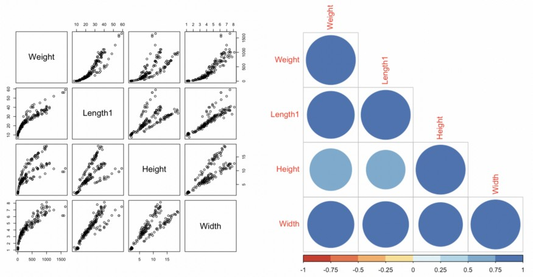

Doğrusal Regresyon'a (Linear Regression) Teknik Giriş
Doğrusal regresyon modeli (Linear Regression), veri bilimciler için temel araçlardan biri olarak kabul edilir. Basit olarak algılansa da, tahminlerde bulunma ve bu tahminlerin ardındaki mekanizmaları anlama konusunda büyük potansiyele sahiptir. Bu model, çeşitli ticari ve bilimsel alanlarda veriler üzerinden çıkarımlar yapmak için birçok araştırmacı tarafından kullanılmaktadır. Ancak, gerçek dünya sorunları üzerinde çalışırken, veri bilimciler zaman zaman doğrusal regresyon modellerini bir kenara bırakıp daha güçlü tahmin yeteneklerine sahip algoritmalara yönelme eğilimindedir. Elbette, seçilen yöntem, sorulan sorunun ve hedeflerin doğasına bağlı olmalıdır; yani amacınız yalnızca bir soruya cevap bulmak mı yoksa sürecin nasıl işlediğini de anlamak mı?
Doğrusal regresyon modellerini kullanmak, zaman, istatistiksel bilgi ve doğrusal olmayan süreçlere yönelik kapsamlı anlayış gerektirir. Bu, sadece bir komut dosyası çalıştırmak ve hiper parametreleri doğrulamakla sınırlı bir işlem değildir; daha derin bir anlayış ve analiz gerektirir.
Bu makalede, doğrusal regresyon modeli uygulanırken göz önünde bulundurulması gereken temel noktaların özetini sunmayı amaçlamaktayız. Burada sunulanlar, sonuçları yorumlamadan önce dikkate alınması gereken faktörleri ve dikkat edilmesi gereken alanları anlamanıza yardımcı olacak bir kılavuz niteliğindedir ve kesin bir reçete değildir.
Doğrusal Regresyon Uygulamaları
Bahsettiğimiz gibi, cevaplamak isteyebileceğimiz sorulardan biri "nasıl?"dır. Örneğin, ders çalışmak için harcanan saat ile sınav puanları, eğitim düzeyi ve maaşlar arasındaki ilişkiyi anlamak; ya da belki bir işinizde belirli bir pazarlama kampanyasına harcanan her para için satışlardaki marjinal artışı anlayabilmek ile ilgileniyorsunuz. Her örnekteki anahtarın, değişkenler arasındaki korelasyonun anlaşılması olarak yorumlanabilecek "anlama" kelimesi olduğunu fark edeceksiniz. Bu bağlamda, bazı yorumlanabilir kalıpları yakalamak ve verilerin arkasında neler olduğu hakkında bazı fikirler vermek için doğrusal bir regresyon çok yararlı olabilir.
Hatırlatmak için, doğrusal bir regresyon uygularken, verilerin doğrudan görülemeyen, popülasyon örneğinden bir dizi özellik kullanılarak kısmen tahmin edilebilen belirli bir "işlev veya doğal dağılımı" olduğunu varsayıyoruz. Özellikle, bu varsayım, sonuçların "doğruluğu" hakkında tartışabilmek için test etmemiz ve doğrulamamız gereken birçok hususu içerir.
Örnek: R'de Doğrusal Regresyon modeli analizi
Bununla birlikte, R'de uygulanan pratik bir örnekle başlayalım.
Diyelim ki önümüzdeki hafta sonu bazı arkadaşlarınızla balığa çıkmayı planlıyorsunuz ve sadece bir alet kullanarak balık ağırlıklarını çok yüksek hassasiyetle tahmin edebileceğinizi göstererek onlara sürpriz yapmayı düşünüyorsunuz. Ama hepsi bu değil! Ayrıca herhangi bir boyut ölçümü (dikey uzunluk, boy vb.) değişirse balığın ağırlığının ne kadar değişebileceğini de söyleyebilirsiniz. Yani bu noktada arkadaşlarınız arasında çok popüler olmayabilirsiniz, ancak bazı bahisleri kazanabilirsiniz.
Bu, lineer regresyon modelimizi kullanmak ve gelişmiş teknikleri araştırmak için eğlenceli bir bağlamdır. Bu örnekte, Kaggle'daki Aung Pyae'den alabileceğiniz balık pazarındaki yaygın balık türlerinin veritabanını kullanacağız. Bu veri kümesi, farklı boyut ve tür ölçümlerini tanımlayan birkaç sütun ve 158 gözlem içerir. Bu analiz için 3 basit boyut ölçüm değişkeni kullanarak başlayacağız: dikey uzunluk, yükseklik ve ağırlık (tüm değişkenler santimetre cinsinden). Bu değişkenler modelimizin predictorleri olacak. Yanıt değişkeni için balıkların gram cinsinden ağırlığına sahibiz. Şimdi, örneğimize başlayalım!
Paketleri içe aktarma
library(MASS)
library(Kendall)
library(car)
library(corrplot)
library(RColorBrewer)
Residuals çizimleri için bir fonksiyon oluşturma
Her şeyden önce, regresyon modelinden kaynaklanan residualları çizmemize izin veren bir fonksiyon oluşturacağız. Bu durumda, daha sonra değişen varyans analizi yaparken ham residuallardan daha iyi performans gösterdikleri için öğrencileştirilmiş residualları alıyoruz. Bunun nedeni, teorik lineer modeldeki varyansın "bilinen" olarak tanımlanması ve uygulamada bunun yerine örnek varyansının tahmin edilmesidir, bu nedenle ham residuallar, homoskedastik olsa bile hatalarda değişen varyans gösterebilir. StackExchange'de bu etki hakkında kısa bir açıklama bulabilirsiniz.
plot_residuals = function(linear_model){
res_stud=rstudent(linear_model)
k=1
for(i in res_stud){
if(is.na(i)){res_stud[k]=0}
else{res_stud[k]=i}
k=k+1}
par(mfrow=c(1,2))
plot(linear_model$fitted.values,res_stud); abline(0,0); abline(-3,0,col="red"); abline(3,0,col="red")
qqnorm(res_stud); qqline(res_stud, col = 2)
}
Veri kümesini içe aktarma ve keşfetme
Başlangıçta balığın dikey uzunluğu, yüksekliği ve genişliği değişkenlerini öngörücü olarak ve "ağırlık" değişkenini yanıt değişkeni olarak kullanacağız.
df_fish = read.csv('Fish.csv',header=TRUE)
selected_cols = c('Weight','Length1', 'Height','Width')
df_fish = df_fish[,selected_cols]
attach(df_fish)
summary(df_fish)Hatalı satırları silin
Verilerin kısa bir incelemesinden sonra, "ağırlığı" 0'a eşit olan bir gözlem bulduk, bu nedenle gelecekteki sorunlardan kaçınmak için onu ortadan kaldırdık. Ek olarak, yanıt değişkenlerini ve residualları sonradan dönüştürmek için kullanılan değişkenlerin her zaman pozitif değerler almasını gerektirdiği belirtilmelidir.
df_fish = df_fish[Weight!=0,]
rownames(df_fish)=1:nrow(df_fish)Verileri keşfetme
Değişkenlerin dağılım diyagramını ve bir korelasyon matrisini çizerek veri keşfine devam ediyoruz. Buradaki amacımız, öncelikle regresörler ile yanıt değişkeni arasında bir ilişkinin varlığını bulmak ve ikinci olarak olası bir çoklu bağlantı sorunu beklentisiyle predictor değişkenler arasındaki korelasyonu görmektir.
# Scatter plot (Dağılım grafiği)
par(mfrow=c(1,3))
pairs(df_fish)
# Correlation matrix (korelasyon matrisi)
M = cor(df_fish)
corrplot(M, type="lower",col=brewer.pal(n=8, name="RdYlBu"))
Grafiklerden de görebileceğimiz gibi, sadece predictor değişkenler ile yanıt değişkeni arasında değil, aynı zamanda predictorlerin kendileri arasında da yüksek bir korelasyon var gibi görünüyor. Bu, çoklu bağlantı sorunuyla yüzleşmemiz gerektiği anlamına gelir.
Ayrıca, predictorler ve yanıt değişkeni arasında doğrusal olmayan bir ilişkinin varlığı da gözlemlenebilir, bu da değişkenlerde herhangi bir dönüşüm olmadan doğrusal bir model uygularsak residuallarda yapısal sorunlarla karşılaşacağımız anlamına gelir.
Bu bağlamda, modelin daha kesin bir düzeltmesini elde etmemizi sağlayacak testler ve dönüşüm teknikleri kullanarak bu çıkarımları değerlendirmeye devam edeceğiz.
Doğrusal Regresyonda Eğitim - Test Split
Sırasıyla gözlemlerin %80'ini ve %20'sini kullanarak eğitim ve test bölümünü gerçekleştirdik.
n_sample = floor(0.8*nrow(df_fish))
set.seed(7)
train = sample(seq_len(nrow(df_fish)), size = n_sample)
train_sample = df_fish[train,]
row.names(train_sample) = NULL
test_sample = df_fish[-train,]
row.names(test_sample) = NULLModel 1
Orjinal doğrusal model
3 orijinal predictorü ve yanıt değişkenini kullanarak ilk modelimize uyarlıyoruz. Daha sonra regresyon sonuçlarını yazdırıyoruz.
lm_original = lm(Weight~., data=train_sample)
summary(lm_original)
Beklediğimiz gibi, regresyon sonuçları regresörlerin iyi bir performans gösterdiğini yönünde. Aslında, model genel olarak tahmini yanıt değişkeninin ortalamasını yansıtmaktan oluşan bir modelden daha iyi performans gösteriyor (bu fark, güven seviyelerinin geleneksel değerlerinde istatistiksel olarak anlamlıdır). Fisher istatistiği p değeri 0'a yakın olup, modelin yanıt değişkeninin ortalama etrafındaki değişkenliğin %88'ini açıkladığını gösteren Düzeltilmiş R-karede (Adjusted R-squared) gözlemlenebilir.
Ayrıca, ilk çizimde gördüklerimize dayanarak, balığın "ağırlığı" ve "genişliği" arasında daha yüksek bir korelasyon veya anlamlılık düzeyi bekleyebilirdik. Ancak, beklediğimiz ile bulduğumuz arasındaki bu fark, çoklu bağlantıdan kaynaklanmaktadır.
Çoklu doğrusallığı kontrol etme
Çoklu bağlantı olayını ele almak için, her bir predictorün diğer predictörlere göre korelasyonunu anlamamıza izin veren ve bir değişkenin modelimiz için risk değişken olup olamayacağını tanımlamamıza yardımcı olan Inflation Factor (VIF) kullanacağız.
vif(lm_original)
Sonuçları gözlemleyerek, "genişlik" değişkeniyle ilişkili daha yüksek bir VIF olduğunu not ediyoruz. Bu nedenle, çoklu doğrusallığı en yüksek olan değişkeni modelden çıkararak modelimizi küçülteceğiz ve ardından kalan modelle VIF'i yeniden hesaplayacağız.
Model 2
Azaltılmış doğrusal model
Şimdi modelimizi sadece "dikey uzunluk" ve "yükseklik" değişkenleri ile yeniden oluşturuyoruz.
lm_reduced = lm(Weight~Length1+Height, data=train_sample)
summary(lm_reduced)
Yeni değişken alt kümesine sahip modelin sonuçları pratikte değişmeden kalır. Gerçekte gözlemleyebildiğimiz şey, Ortalama kare hatasında çok küçük bir artış ile beraber "yükseklik" değişkeninin istatistiksel anlamlılık düzeyinde küçük bir gelişme ve Düzeltilmiş R-kare'de çok küçük bir düşüş görürüz.
Çoklu doğrusallığı kontrol etme
Her bir predictörün VIF'ine ne olduğunu görelim.
vif(lm_reduced)
Gördüğümüz gibi, kalan iki açıklayıcı değişken için VIF önemli ölçüde azaldı. Bu, "genişlik" değişkenini kaldırmanın iyi bir karar olduğunu gösteriyor; daha basit, daha iyidir.
Residual Çizimi
Değişkenlerimizi tanımladığımıza göre, regresyon sonuçlarının kapsamlı bir analizini yapmaya devam ediyoruz. Residualların analizi, regresyon modelimizden en iyi şekilde yararlanmak için temel bir unsurdur. Başlangıç olarak, bu tür bir modeli kullanırken, hata dağılımının normalliği varsayımından hareket ediyoruz. Bu, modelin sağladığı tüm avantajlardan yararlanmamızı sağlar.
plot_residuals(lm_reduced)
Grafikte gördüğümüz gibi, residuallarda bir tür ikinci dereceden yapı var gibi görünüyor. Bu, kullanılan predictörlerde bazı ek bilgilerin hala çıkarılabileceğini gösterir; ancak, bu bilgiyi çıkarmak için değişkenler üzerinde belirli dönüşümler yapmamız gerekebilir.
Verilerin normalliği ile ilgili olarak (Normal Q-Q Grafiği), residualların dağılımında bazı çarpıklıklar ve ağır kuyruklar gözlemleyebiliriz. Bu sezgiyi doğrulamak için, genel olarak iki dağılımın eşit olup olmadığını ve bu özel durumda residualların dağılımının teorik ile benzer olup olmadığını karşılaştırmamıza izin veren Kolmogorov-Smirnov testini kullanacağız.
Residuallarda normalliğin test edilmesi
lm_reduced_residuals=rstudent(lm_reduced)
ks.test(lm_reduced_residuals,"pnorm",mean(lm_reduced_residuals),sd(lm_reduced_residuals))
Kolmogorov-Smirnov testinin sıfır hipotezi, her iki dağılımın da eşit olmadığı, alternatif hipotezi ise her iki dağılımın da eşit olduğu şeklindedir. Test sonucunda, sıfır hipotezin reddedilmesini istiyoruz (yüksek bir p değerine ihtiyacımız var). Ancak bu durumda, p-değerinin bazı geleneksel güven düzeylerinden daha düşük olduğunu gözlemliyoruz. Bu, %1 düzeyinde sıfır hipotezini reddetmediğimizi ve sonuç olarak yeterli kanıta sahip olmadığımızı gösterir.
Heteroskedastisite: Residuallar ve uygun değerler arasındaki korelasyonu test etme
Residualların homoskedastisitesini doğrulamakla ilgileniyoruz. Homoskedastisite, modelimizin öngördüğü değerler arttıkça veya azaldıkça hataların büyümediğini veya küçülmediğini ifade eder. Bu, modelin performansını iyileştirmemize yardımcı olabilecek bir özelliktir.
summary(Kendall(abs(lm_reduced$residuals),lm_reduced$fitted.values))
Uygulanan Kendall testi, residuallar ve tahmin edilen değerler arasında istatistiksel olarak anlamlı bir korelasyon olduğunu gösterir. Bu, değişen varyanslı residuallarda olduğumuzu ve modelin iyileştirilmesi gerektiğini gösterir.
Model 3
Yanıt değişkenini dönüştürme
Residual bir yapıya sahip olduğumuzda, yanıt değişkenini dönüştürmek veya öngörücüleri dönüştürmek gibi seçeneklerimiz var. Pratikte, yanıt değişkenini dönüştürmekle başlamak ve yeni bir dönüşüm önermeden önce sonuçları yeniden değerlendirmek yaygındır.
Ardından, Box-Cox maksimum olabilirlik tekniğini kullanarak "ağırlık" değişkenini dönüştürmeye başlayacağız. Bu, değişkenin x power lambda olarak dönüştürülebileceği bir lambda değeri tahmin etmemize izin verir.
y_transformed=boxcox(lm_reduced)
y_transformed$x[which.max(y_transformed$y)]
Sonuçlar, "ağırlık" değişkeni üzerinde 0.38 lambda gücü uygulamak olası bir dönüşümü göstermektedir. Bu büyüklükteki bir dönüşüm, modelin nihai sonuçlarının yorumlanmasını zorlaştırabilir. Genellikle, katsayıları kolaylıkla yorumlamamıza izin veren önerilen değere yakın bir dönüşüm tercih edilir. Bu nedenle logaritmik bir dönüşüm seçiyoruz.
Dönüştürülmüş yanıt değişkeni ile doğrusal modeli çalıştırma
lm_transform_y = lm(log(Weight) ~ Length1 + Height, data=train_sample)
summary(lm_transform_y)
Bu dönüşümü uyguladıktan sonra, modelin performansında küçük ama önemli bir gelişme fark ediyoruz. Hem modelin hem de predictorlerin istatistiksel anlamlılık düzeylerini korurken, Düzeltilmiş R Karede %1'den fazla bir artış gözlemleyebiliriz.
Residual Çizimi
plot_residuals(lm_transform_y)
Peki, sorunu çözdük mü? Hataların yapısı değerlendirildiğinde, bu ilk dönüşüm hem değişen varyans problemini tersine çevirmemiş hem de normal dağılımdan uzak olan residualların dağılımını “kötüleştirmiş” görünmektedir.
Residuallarda normalliğin test edilmesi
lm_transform_y_residuals=rstudent(lm_transform_y)
ks.test(lm_transform_y_residuals,"pnorm",mean(lm_transform_y_residuals),sd(lm_transform_y_residuals))
Residualların dağılımı, yeni p-değerinde (geçerli 0,01, önceki 0,04) yansıtıldığını gördüğümüz gibi, normal dağılımdan uzaklaştı. Bu nedenle, hata dağılımında normalliği reddetmeye devam ediyoruz.
Heteroskedastisite: Residuallar ve uygun değerler arasındaki korelasyonu test etme
summary(Kendall(abs(lm_transform_y$residuals),lm_transform_y$fitted.values))
Değişen varyansla ilgili olarak, biraz da olsa “kötüleşmiş” görünüyor, bu yüzden hala bu sorunu tersine çeviremiyoruz.
Model 4
Predictorleri dönüştürmek
Predictorlerin dönüşümü için Box-Tidwell maksimum olabilirlik dönüşüm tekniğini kullanacağız, bu teknik, açıklayıcı değişkenlerden daha fazla bilgi çıkarmamızı sağlayacak önerilen lambda gücünü anlamamıza yardımcı olur.
boxTidwell(log(Weight) ~ Length1 + Height ,data=train_sample)
Elde edilen sonuçlar, Length1 değişkeni için lambda = 0.007 ve Height değişkeni için lambda = -0.38 dönüşümünün uygulanmasını önerir. Her iki durumda da, önerilen dönüşümler %1 düzeyinde istatistiksel olarak anlamlıdır. Sonuç olarak, önerilen değerlere göre çok hassas dönüşümler yapmanın sonuçların sonraki yorumlarını büyük ölçüde karmaşık hale getirebileceğini görüyoruz. Bu nedenle, her iki değişkene de logaritmik bir dönüşüm uygulamayı tercih ediyoruz.
Doğrusal modeli yanıt değişkeni ve dönüştürülmüş predictorler ile çalıştırma
lm_transform_y_X = lm(log(Weight) ~ log(Length1) + log(Height), data=train_sample)
summary(lm_transform_y_X)
Gerçekleştirilen dönüşümler, modelin istatistiksel anlamlılık düzeylerini korurken, Düzeltilmiş-R-kare'nin yaklaşık %9'luk bir artış gösterdiği performansta önemli bir gelişme sağlamıştır.
Residual Çizimi
plot_residuals(lm_transform_y_X)
Residualların grafiklerini analiz ederken, residualların yapısında ve normal dağılıma yakınlıkta dikkate değer bir gelişme gözlemliyoruz.
Residuallarda normalliğin test edilmesi
lm_transform_y_X_residuals=rstudent(lm_transform_y_X)
ks.test(lm_transform_y_X_residuals,"pnorm",mean(lm_transform_y_X_residuals),sd(lm_transform_y_X_residuals))
Sıfır hipotezini (p-değeri = 0,5) reddedebildik, bu da mevcut modelle residualların dağılımının normal olmadığını sürdürmek için yeterli bilgi olmadığını gösterir.
Heteroskedastisite: Residuallar ve uygun değerler arasındaki korelasyonu test etme
summary(Kendall(abs(lm_transform_y_X$residuals),lm_transform_y_X$fitted.values))
Yüksek bir p-değeri (0,84) ile residuallar ve uygun değerler arasındaki korelasyonda istatistiksel olarak anlamlı bir azalma bulduk, bu da değişen varyans sorununu tersine çevirdiğimizi gösterir.
Sonuçlar

Modelin performansı %99'a yakın bir determinasyon katsayısı (Adjusted R-squared) ile çok iyi görünüyor, bu da "dikey uzunluk" ve "yükseklik" değişkenlerini kullanarak yanıt değişkenini neredeyse tamamen açıklayabildiğimizi gösteriyor.
Ayrıca, bu model, residualların yanıt değişkeni üzerindeki kısmi etkisini ve uygulanan dönüşümler sayesinde çıkarım yapmamıza olanak tanır. Örneğin, dönüştürülmüş değişken log(Length1)'e eşlik eden katsayı, uzunluğu %10 daha fazla olan bir balığın ağırlığının yaklaşık %20 daha fazla olacağını gösterir. Benzer şekilde, dönüştürülmüş değişken log(Height)'a eşlik eden katsayı, Height'ı %10 daha fazla olan bir balığın ağırlığının yaklaşık %10 daha fazla olacağını gösterir.
Modelimiz, balık tahminlerinde kral olmanıza olanak tanır. Bu pratik örnek, çok sayıda kavramı ele almamızı ve lineer regresyon modellerini incelememizi sağladı. En uygun cevap her zaman en karmaşık olanı değildir.